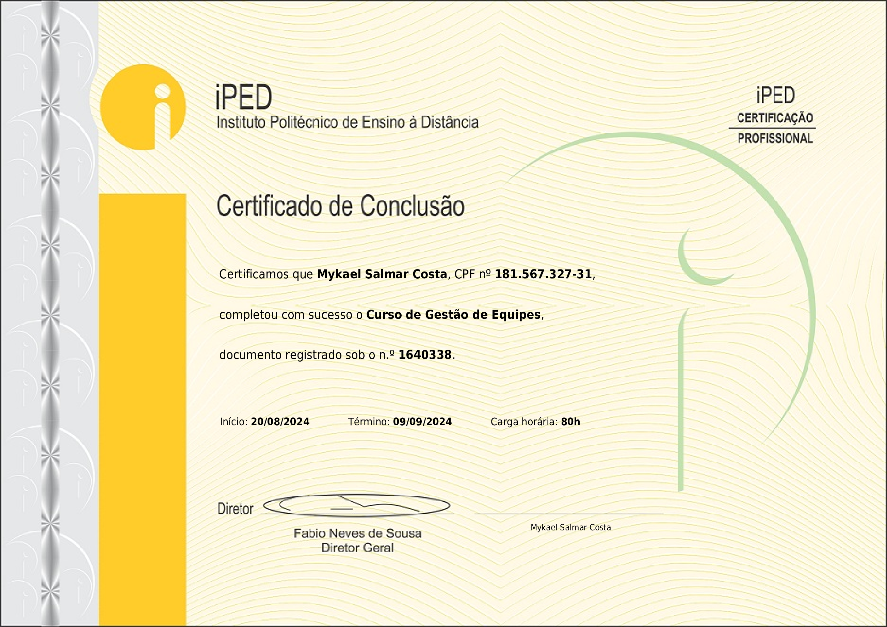
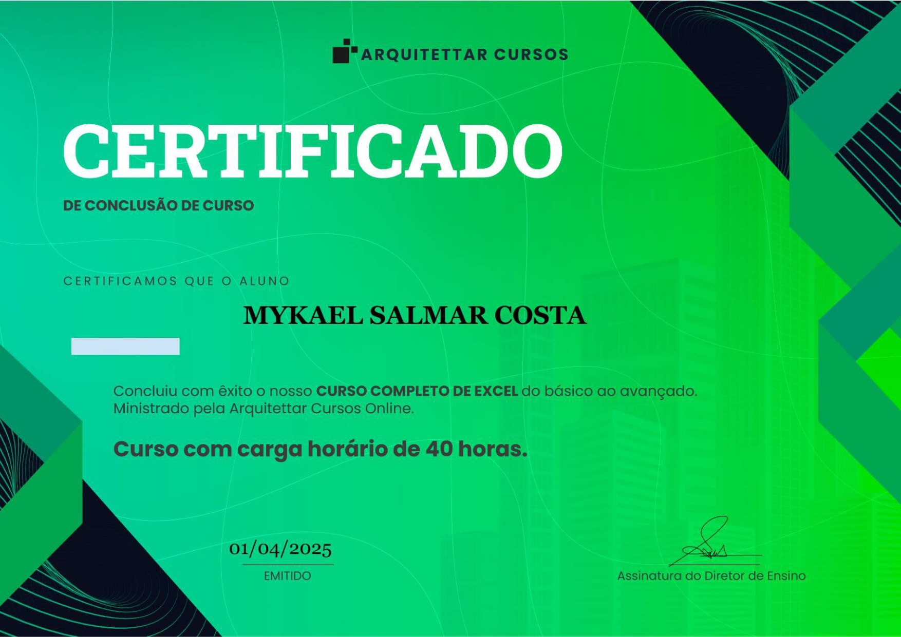
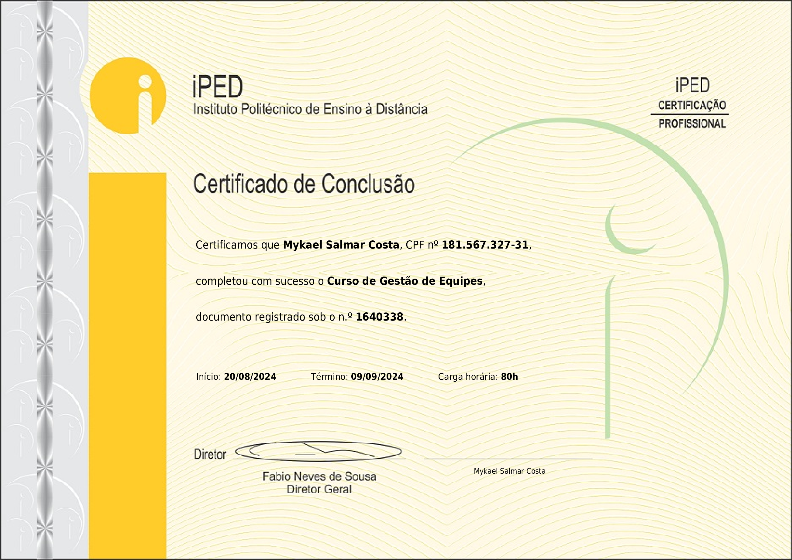
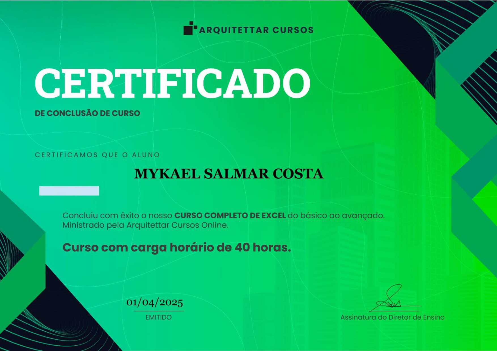

Meus certificados
Esta página reúne certificados de cursos concluídos ao longo da minha formação em desenvolvimento de software. Os estudos refletem um processo contínuo de aprendizado, com foco na construção de uma base sólida e evolução técnica progressiva.


 


